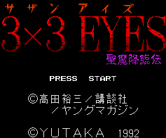

3X3 Eyes - SNES Games
3X3 Eyes Juumahoubukan
Company:
Banpresto
Genre:
Platform game
3X3 Eyes Seimakourinden

Company:
Yutaka/Bandai
Date Released:
28 July 1992
Price (in yen):
9500
Genre:
RPG
Anime Video Game Resource Center © 1998 by
Luis A. Cruz
![[3X3 Eyes Juumahoubukan]](images/snes3x3.gif)